연삭기능사 (2004-07-18 기출문제)
1과목: 기계가공법 및 안전관리
1. 다음 중 칩(chip)이 생겨나는 작업은?
- 판금
- 선삭
- 용접
- 주조
(정답률: 알수없음)

2. 공작기계의 일반적 구비조건에 해당되지 않는 것은?
- 기계의 탄성이 클 것
- 공작기계의 정밀도가 좋을 것
- 동력손실이 적을 것
- 조작이 용이하고, 안정성이 높을 것
(정답률: 알수없음)
3. 세이퍼를 직립형으로 한 공작기계라고 볼 수 있는 것은?
- 수평식 횡행형 세이퍼
- 단주식 플레이너
- 슬로터
- 쌍주식 플레이너
(정답률: 알수없음)
4. 불수용성 절삭유제(劑)에 대한 각각의 설명으로 옳지 않은 것은?
- 극압유는 절삭공구가 고온, 고압상태에서 마찰을 받을 때 사용하며, 윤활작용이 주목적이다.
- 혼합유는 광물성 기름에 지방유,지방산 에스터 등의 유성제를 혼합한 것이다.
- 광물성유는 냉각작용은 좋으나 윤활작용이 좋지 못하므로 주로 중절삭에 쓰인다.
- 광물성유에는 등유, 경유, 스핀들유, 기계유 등이 있다.
(정답률: 알수없음)
5. 선반에서 끝면 깎기에 쓰이는 센터는?
- 회전센터
- 하프센터
- 베어링센터
- 45° 센터
(정답률: 알수없음)
6. 선반에서 테이퍼 가공 방법 중 내용이 옳지 못한 것은?
- 테이퍼 가공은 반드시 복식 공구대만을 선회시켜 수동으로 절삭한다.
- 테이퍼 절삭 장치를 사용할 수도 있다.
- 심압대를 편위시켜서 테이퍼를 가공할 수도 있다.
- 테이퍼의 길이가 짧을때는 총형 커터로 가공할 수도 있다.
(정답률: 알수없음)
7. 밀링의 아버상에서 플레인 밀링 커터의 고정위치를 조절하는 것은?
- 칼라(collar)
- 아버 지지부
- 고정 너트(nut)
- 조절 링(ring)
(정답률: 알수없음)
8. 호빙머신의 네가지 운동이 있는 데, 여기에 해당되지 않는 것은?
- 테이블의 이송
- 테이블의 회전
- 호브의 이송
- 호브축의 회전
(정답률: 알수없음)
9. 일반적인 방법으로 보통 호빙머신(hobbing machine)에서 가공할 수 없는 기어는?
- 베벨기어
- 헬리컬기어
- 스퍼기어
- 워엄기어
(정답률: 알수없음)
10. 홑줄날이 사용되는 가장 적합한 경우는?
- 일반적으로 널리 사용된다.
- 두껍고 단단한 재료에 주로 사용된다.
- 두껍고 연한 재료에 주로 사용된다.
- 연한 금속이나 얇은 판 가장자리에 사용된다.
(정답률: 알수없음)
11. 나사의 유효지름 측정에 관계없는 것은?
- 삼선법
- 센터게이지
- 공구 현미경
- 나사 마이크로 미터
(정답률: 알수없음)
12. 테이퍼 번호에 관계없이 항상 1/20 인 테이퍼는?
- 모스 테이퍼(Morse taper)
- 자르노 테이퍼(Jarno taper)
- 쟈콥스 테이퍼(Jacob's taper)
- 내셔널 테이퍼(national taper)
(정답률: 알수없음)
13. 니(knee)위에서 전후 방향으로 이송하는 수평밀링 머신 부속 장치의 명칭은?
- 컬럼(column)
- 주축(spindle)
- 새들(saddle)
- 테이블(table)
(정답률: 알수없음)
14. 선반에서 ø 20mm 고속도강 드릴을 사용하여 25 m/min의 절삭속도로 드릴링할 때, 알맞는 회전수는 약 몇 rpm인가?
- 200
- 400
- 600
- 800
(정답률: 알수없음)
15. 드릴 1회전하는 동안에 이송거리 S=0.12mm라 하고, 드릴끝 원뿔의 높이 h=1.6mm, 구멍의 깊이 t=30mm라 하면 이 구멍을 뚫는데 소요되는 시간이 13초라면, 절삭속도는 몇 m/min 인가? (단, 드릴의 지름 d = 8mm 이다.)
- 30.5
- 40.4
- 50.3
- 60.2
(정답률: 알수없음)
16. KS규격에 의한 안전색채 녹색의 사용 목적이 아닌 것은?
- 위생
- 피난
- 보호
- 지시
(정답률: 알수없음)
17. 기계띠톱 및 둥근톱에 대한 안전사항으로 틀린 것은?
- 띠톱기계는 규정 이상의 속도로서 회전 점검한다.
- 띠톱날에 균열이 있는가 확인하고 끼운다.
- 둥근톱 기계의 작업대는 작업에 적합한 높이로 한다.
- 띠톱을 풀을 때에는 기계를 멈춰 놓고 작업한다.
(정답률: 알수없음)
18. 치수 정밀도 향상을 목적으로 광택 내기를 위한 가공법은?
- 호우닝(honing)
- 버핑(buffing)
- 텀블링
- 래핑(lapping)
(정답률: 알수없음)
19. 비교적 다량의 광물성 기름에 소량의 유화제, 방청제 등을 첨가한 것으로 10∼20배의 물로 희석하여 사용하는 것은?
- 수용성 절삭유
- 혼합유
- 동물성유
- 식물성유
(정답률: 알수없음)
20. KS 규격에서 안전색깔과 그에 알맞는 안전표지 내용을 잘못 연결시킨 것은?
- 자주 : 방사능
- 빨강 : 정지
- 주황 : 위험
- 파랑 : 구호
(정답률: 알수없음)
2과목: 기계재료 및 요소
21. 밀링 커터로 연강을 절삭하려 한다. 1 날당 이송량을 0.15mm로 하고 12날의 커터로 매분 150회전 시킬 때, 테이블의 이송 속도는 몇 mm/min 인가?
- 80
- 150
- 270
- 350
(정답률: 알수없음)
22. 다음 밀링 머신 중에서 일반적으로 가장 큰 공작물을 절삭할 수 있는 것은?
- 모방 밀링머신
- 생산형 밀링머신
- 플레이너형 밀링머신
- 형조각 밀링머신
(정답률: 알수없음)
23. 절삭유제의 3가지 작용에 속하지 않는것은?
- 냉각작용
- 세척작용
- 윤활작용
- 마모작용
(정답률: 알수없음)
24. 절삭 공구가 1회전할 때, 공작물도 1피치 회전하며 가공되는 공작기계는?
- 호빙 머신
- 브로칭 머신
- 방전가공기
- 드릴링 머신
(정답률: 알수없음)
25. 선반 작업시 주의할 사항으로 틀린 것은?
- 복장을 단정히 하고 보안경을 착용한다.
- 기계를 사용하기 전에 이상유무를 확인한다.
- 실습이 끝나면 전원스위치를 끄고 뒷정리를 한다.
- 추울 때는 반드시 장갑을 끼고 작업을 한다.
(정답률: 알수없음)
26. 알루미나 인조 숫돌 입자는 WA, A의 기호로 표시하는 데 연삭할 때 파쇄되어 예리한 날이 생기기 쉬운 순도는?
- 1A
- 2A
- 3A
- 4A
(정답률: 알수없음)
27. 연삭 가공에서 숫돌을 사용 중에 변형된 숫돌 바퀴의 표면을 바로 잡기 위하여 수정하는 것을 무엇이라 하는가?
- 트루잉(truing)
- 크러싱(crushing)
- 눈메움(loading)
- 글레이징(glazing)
(정답률: 알수없음)
28. 다음 중 작업대 위에 설치하여 사용하는 소형의 드릴링 머신은?
- 직립 드릴링 머신
- 탁상 드릴링 머신
- 레이디얼 드릴링 머신
- 다축 드릴링 머신
(정답률: 알수없음)
29. 연삭숫돌 입자의 크기를 나타내는 입도(grain size)의 선정에서 거친 입도를 선택해야 할 경우는?
- 연하고, 연성이 있는 재료의 연삭
- 다듬 연삭, 공구의 연삭
- 경도가 큰 재료의 연삭
- 숫돌과 일감의 접촉 면적이 작은 경우의 연삭
(정답률: 알수없음)
30. 선반가공에서 칩 브레이커(chip breaker) 란 무엇인가?
- 칩의 날끝각
- 칩의 절단장치
- 칩의 여유각
- 칩의 한 종류
(정답률: 알수없음)
31. 3차원 측정기의 분류 형태에 속하지 않는 것은?
- 이동 브리지형(moving bridge type)
- 캔틸레버형(cantilever type)
- 칼럼형(column type)
- 캘리퍼스형(calipers type)
(정답률: 알수없음)
32. 유류 화재에 속하는 등급은?
- A급
- B급
- C급
- D급
(정답률: 알수없음)
33. 축 가공 후 일감의 편심량이나 조립된 면을 측정할 때 가장 많이 사용하는 측정기는?
- 다이얼 게이지
- 실린더 게이지
- 하이트 게이지
- 사인바
(정답률: 알수없음)
34. 연삭 숫돌의 인자 중 절삭날의 발생속도에 영향을 주는 것은?
- 조직
- 입도
- 기공
- 결합도
(정답률: 알수없음)
35. 절삭행정의 속도보다 귀환행정의 속도를 빠르게 하는 급속귀환방식을 적용하지 않는 절삭가공기는?
- 셰이퍼
- 슬로터
- 플레이너
- 호빙머신
(정답률: 알수없음)
36. 상온에서 강자성체이나 360℃이상에서는 자성을 잃으며 구리와는 균일한 고용체를 만드는 금속은?
- 니켈(Ni)
- 주석(Sn)
- 아연(Zn)
- 알루미늄(Al)
(정답률: 알수없음)
37. 다음 열처리 방법 중 표면 경화법에 속하는 것은?
- 항온 처리
- 침탄법
- 담금질
- 불림
(정답률: 알수없음)
38. 고속도강의 KS 재질 기호는?
- SPS
- STD
- SKH
- STS
(정답률: 알수없음)
39. 강을 담금질하기 위하여 고온으로 가열하는 가장 큰 이유는?
- 강의 조직을 페라이트로 바꾸어주기 위함
- 금속간 화합물을 분해하고 각종 원소를 균일하게 분포시키기 위함
- 결정입자를 크게 하기 위함
- 강의 경도를 높이기 위함
(정답률: 알수없음)
40. 고강도 Al합금은 내식성은 작으나 인장강도는 크다. 내식성을 개선하기 위하여 고강도 Al합금 표면에 내식성 Al합금을 접착시킨 것을 무엇이라 하는가?
- 알민
- 알팩스
- 알드리
- 알크래드
(정답률: 알수없음)
3과목: 기계제도(절삭부분)
41. 막대의 양끝에 나사를 깎은 머리없는 볼트로서 한쪽 끝을 본체에 튼튼하게 박고, 다른 끝에는 너트를 끼어서 조일 수 있도록 한 볼트는?
- 기초 볼트
- 탭 볼트
- 스터드 볼트
- T 볼트
(정답률: 알수없음)
42. 회전수 4000rpm일때 20kW를 전달하는 둥근축의 비틀림 모멘트는 얼마인가?
- 487㎏f⋅㎝
- 358.1㎏f⋅㎝
- 3581㎏f⋅㎝
- 4870㎏f⋅㎝
(정답률: 알수없음)
43. 전동축에 휨을 주어서 축의 방향을 자유롭게 변경할 수 있는 축은?
- 크랭크 축
- 플렉시블 축
- 차 축
- 직선 축
(정답률: 알수없음)
44. 너트(nut)의 풀림 방지용으로 주로 사용되는 핀은?
- 분할 핀
- 코터 핀
- 스프링 핀
- 테이퍼 핀
(정답률: 알수없음)
45. 탄소강은 200∼300℃에서 상온보다 오히려 메지게 되는데 이러한 현상을 무엇이라 하는가?
- 취성 파괴
- 적열 메짐
- 청열 메짐
- 피로 파괴
(정답률: 알수없음)
46. 다음 중 정련동(electrolytic tough pitch copper)의 특성을 설명 한 것은?
- 산소의 함유량이 적다.
- 전기 및 열전도도가 좋다.
- 강도 및 경도가 좋아진다.
- 수소 여림이 생기기 쉽다.
(정답률: 알수없음)
47. 일반적으로 고온에서 볼수 있는 것으로 금속이 일정한 하중 밑에서 시간이 걸림에 따라 그 변형이 증가되는 현상은?
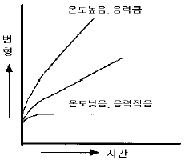
- 피로(fatigue)
- 크리프(creep)
- 허용응력(allowable stress)
- 안전율(safety factor)
(정답률: 알수없음)
48. 재료의 비례한도 내에서 길이 l , 단면적 A인 재료에 축방향 하중 P를 가했을 때 변형량을 나타내는 공식은? (단, σ :수직응력 E:세로탄성률 ε :변형률)
- σ/ε
- Pl/Aε
- ε/σ
- σl/E
(정답률: 알수없음)
49. 다음 중 잘못된 것은?
- 인장⋅압축 선형스프링에서 탄성한도 내에서는 스프링의 변형은 하중에 비례한다.
- 스프링지수는 코일의 평균 반지름(R)과 재료의 지름(d)의 비이다.
- 스프링에 하중이 작용하지 않고 있을 때의 높이를 자유 높이라고 한다.
- 코일 스프링에서 유효감김 수란 스프링의 기능을 가진 부분의 감김 수를 말한다.
(정답률: 알수없음)
50. 베어링의 재료가 구비해야 할 조건이 아닌 것은?
- 녹아 붙지 않을 것
- 길들임이 좋을 것
- 부식에 약할 것
- 피로 강도가 클 것
(정답률: 알수없음)
51. 제 3각법에서 평면도는 정면도의 어느쪽에 있는가?
- 좌측
- 우측
- 위
- 아래
(정답률: 알수없음)
52. 치수 10 mm 의 그림을 2/1 배척으로 그렸다면 도면에 기입하는 치수는 몇 mm 인가?
- 5
- 10
- 20
- 40
(정답률: 알수없음)
53. 구멍
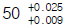
에 조립되는 축의 치수가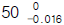
이라면 어떤 무슨 끼워맞춤인가?- 구멍 기준식 헐거운 끼워맞춤
- 구멍 기준식 중간 끼워맞춤
- 축 기준식 헐거운 끼워맞춤
- 축 기준식 중간 끼워맞춤
(정답률: 알수없음)
54. 베어링 번호표시가 6815 일때 안지름 치수는 얼마인가?
- 15
- 65
- 75
- 315
(정답률: 알수없음)
55. 다음 그림에서 x 의 값은 얼마인가?
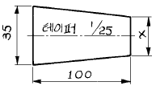
- 31
- 25
- 27
- 30
(정답률: 알수없음)
56. 보기와 같은 평면도와 정면도에서 정면도를 단면한 도면으로 가장 적합한 것은?
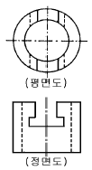
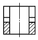
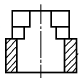
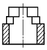
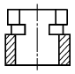
(정답률: 알수없음)
57. 보기의 그림은 어떤 물체의 평면도이다. 이물체의 정면도로 가장 적합한 것은?
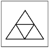
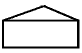
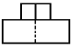
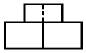
(정답률: 알수없음)
58. 다음 중 이미 다른 가공으로 얻어저 있는 전(前)가공의 상태를 그대로 유지하는 제거 가공해서는 안된다는 면의 지시 기호는?
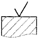
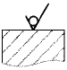
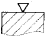
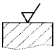
(정답률: 알수없음)
59. 기하 공차의 종류와 기호 설명이 잘못된 것은?
- ◎ ː 동축도 공차
- ↗ ː 원주 흔들림 공차
- ⊕ ː 위치도 공차
- ○ ː 원통도 공차
(정답률: 알수없음)
60. 가동부분을 이동 중의 특정한 위치 혹은 이동한계의 위치로 표시하는데 사용하는 선은?
- 치수선
- 지시선
- 해칭선
- 가상선
(정답률: 알수없음)